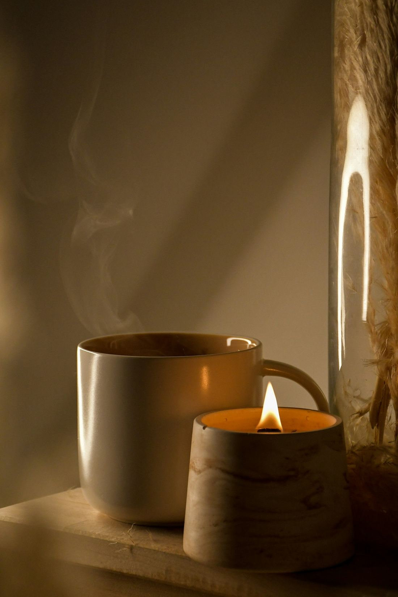

Natal · Casa Calma
O Natal também pode pesar.
Entre a pressa, as saudades e as expectativas, nem toda a gente chega a dezembro com vontade de festa. Aqui há espaço para falar disso, sem pressa.

O que pesa mais este ano?
Escolhe o que ressoa. Não precisas de saber o que dizer: a mensagem segue já escrita.
Se nada disto for exatamente o teu caso, também está bem.
Enviar por WhatsApp
Abre o WhatsApp com a mensagem escrita. Só falta carregares em enviar.